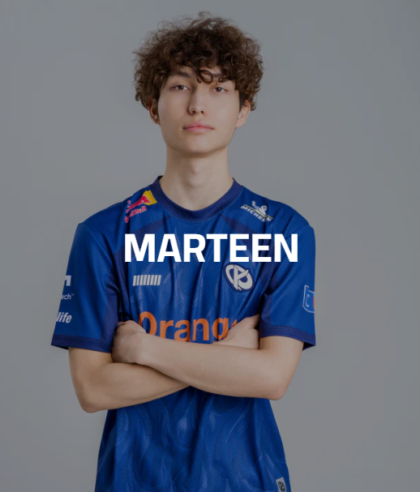
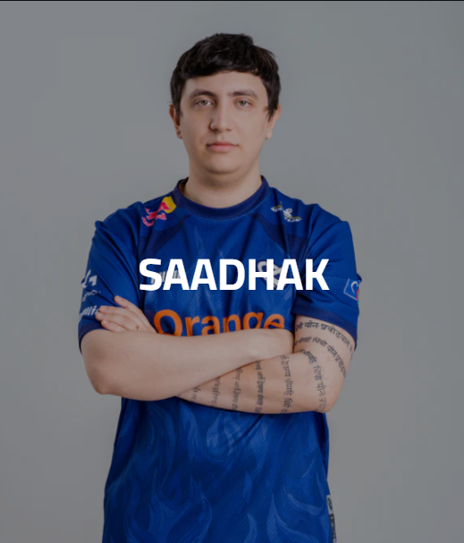
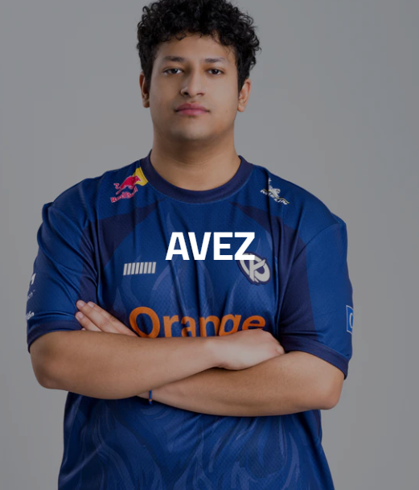
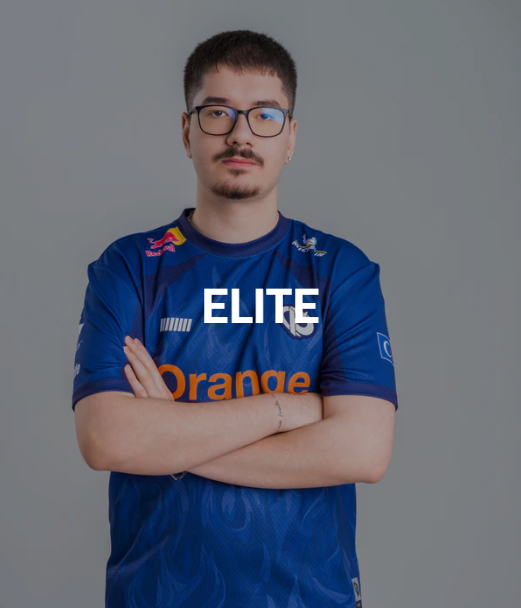
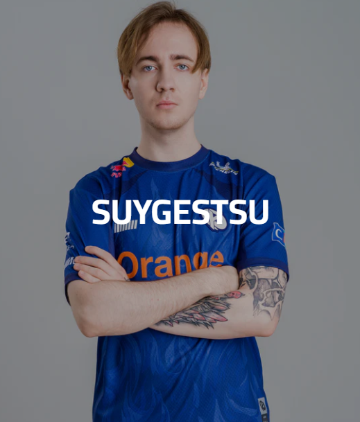
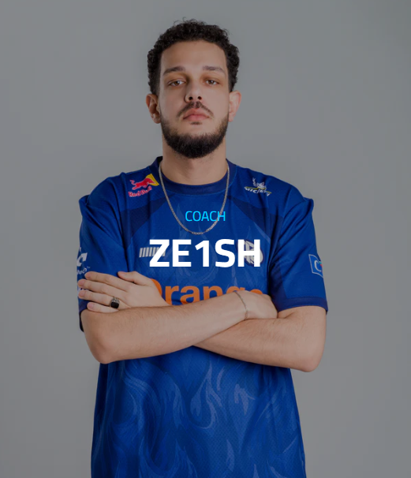

Marteen est un joueur professionnel de VALORANT originaire de République tchèque. Né le 21 Octobre 2004
Il débute sa carrière en 2021 avec l'équipe eSuba.
Il joue actuellement pour l’organisation Karmine Corp (KC) depuis décembre 2023
Marteen se distingue par sa constance, son adaptabilité et des performances incriyable dans les tournois ou compétition
Marteen est considerait comme le duelist de l'équipe avec les agents Raze, Jett et Yoru

Saadhak est un joueur professionnel de VALORANT originaire de l'Argentine. Né le 8 mars 1997
Il débute sa carrière en 2020 avec l'équipe Esral Esports.
Il joue actuellement pour l’organisation Karmine Corp (KC) depuis novembre 2024
Saadhak se distingue grace a son gamesens de plus cest le IGL( in game leader) de l'équipe
Saadhak est considerait comme le support de l'équipe + le IGL il donne les consigne/ stratégies durant la game

Avez est un joueur professionnel de VALORANT originaire de l'Egypt. Né le 5 octobre 2004
Il débute sa carrière en 2020 avec l'équipe Anubis Gaming.
Il joue actuellement pour l’organisation Karmine Corp (KC) depuis novembre 2024
Avez se distingue grace a sa polyvalance sa capacité a trouver des fight et a les isoler
Avez est considerait comme un joeur flex car il peut jouer tous les roles selon le besoin de l'équipe

ELITE est un joueur professionnel de VALORANT originaire Turc. Né le 6 avril 2005
Il débute sa carrière en 2021 avec l'équipe Zero Zone.
Il joue actuellement pour l’organisation Karmine Corp (KC) depuis novembre 2024
Elite se distingue grace a sa maitrise des agents tel que cypher ou kiljoy et a pouvoir defendre un site a lui seul
Elite est consideré comme la sentinelle de l'équipe avec les agents Cypher ou Kiljoy
A noter qu'il ne fait plus partie du rooster(équipe) KC 2025 et qu'il est remplacer par Pyrolll

Suygestsu est un joueur professionnel de VALORANT originaire Russe. Né le 16 juillet 2002
Il débute sa carrière en 2020 avec l'équipe forZe.
Il joue actuellement pour l’organisation Karmine Corp (KC) depuis novembre 2024
Suygestsu se distingue grace a ses smoke rapide, bien placer et au bon moment ce qui crée du basard chez l'ennemi
Suygestsu est considerait comme le smokeur de l'équipe avec les agents Omen ou Astra

Ze1sh est un coach Francho-égyptienne de l'equipe VALORANT KC. Né le 26 juin 1999
Il débute sa carrière en 2020-2021 avec l'équipe Anubis Gaming pour finir avec l'equipe kc en 2024-2025.
Il est reconnu pour sa capacité a gerer les joueur et a instauré une dynamique positive
Il connait les maps et ses joueur ce qui est rare chez un coach, fortement apprecier dans la commu